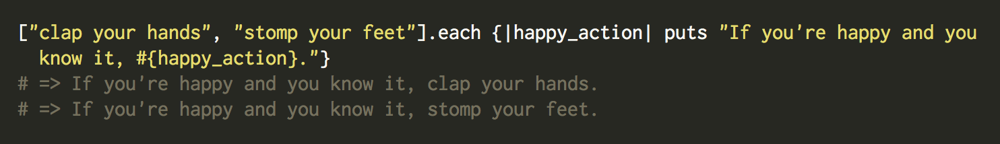
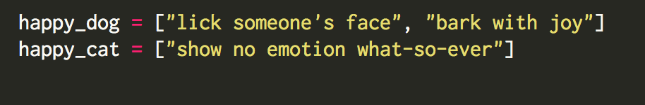
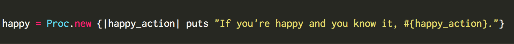
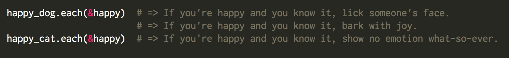
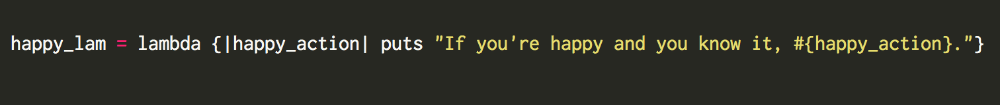
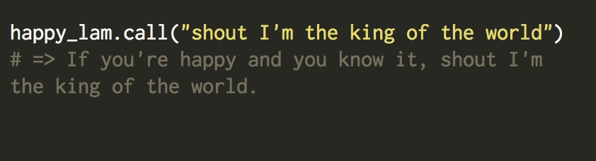
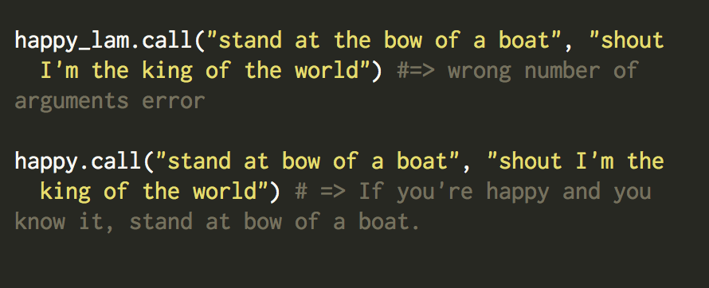

If you've ever seen a chunk of code written inbetween the keywords "do" and "end" or { <--within these fun guys--> }, then you've probably at least seen a block, proc, or lambda. Telling the difference between which one to use when though can be pretty confusing.
Let's start with the easiest -- Blocks. Blocks are contained bits of code that are NOT objects. Since they aren't objects, you can't reuse them. They can however have an argument list between |<--these guys-->| if desired.
Now let's see a block in action! I want to print out some custom lyrics to the repetitive song "If You're Happy and You Know It". I have an array of strings that describe what you might want to do if you're happy and you know it, so let's use a block while iterating through each item in the array to turn those strings into lyrics!

Each time the array hits a new item, the block is called, and the lyric gets printed out. Pretty niffty, huh? But what if I wanted to print out custom lyrics for someone else? Afterall, everyone does different things when they're happy! Like these guys:
 To get a dog's version of the song AND a cat's version, we could iterate through the arrays separately and write out the block each time. This would get pretty tedious if we wanted 100 different versions of the song though. And that's where Procs come in!
Procs are essentially object versions of Blocks. Since they are objects, they can be invoked multiple times. We can transform our initial block into a proc just by calling Proc.new, followed by a block, like this:

Now that block is stored in our proc, so we can run the block anytime we call the object happy. To call a proc with a method, use "&" before the proc name, like so: 
So we've got blocks and procs down now, but what are Lambdas? Lambdas are actually special procs that behave like methods. For example, a regular proc will not raise an error if you pass it the wrong number of arguments -- it will still run and just ignore any extra arguments given. A lambda, however, will raise an argument error.
Procs and Lambdas also handle the return keywod differently. If return is called in a Proc, it will exit out of the entire method in which the proc was initially called. If return is called in a Lambda, however, it will just exit out of the lambda, and continue running the code immediately after. We can create a lambda version of our original block like so:

Since lambdas are procs, we could pass &happy_lam to the each method like we did with our regular proc earlier and get the same results. But what if we wanted to call just the lambda, without any other methods involved? We can use the call method!

This works fine because our lambda is only expecting one argument, and we are passing it one argument. But what if we wanted to print out more than just one line? What if we wanted our regular proc to print more than one line?

As you can see, passing a lambda more arguments than it expects raises an argument error, but passing a regular proc more arguments than it expects means the proc runs anyway but ignores the extra arguments.
Blocks, procs, and lambdas are all variations on a common theme -- they can act like methods, but they aren't tied to a particular object or class. They help reduce repetition in code, and just make your life a lot easier in general. So start using blocks, procs, and lambdas! They'll make you just as happy as that puppy at the top of this post.